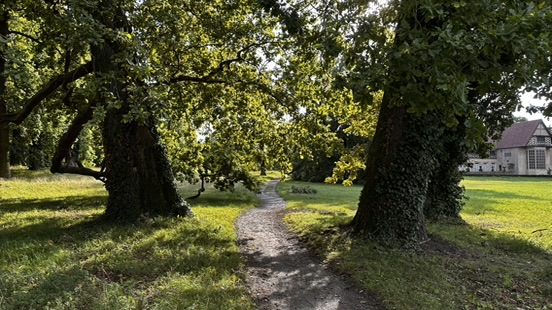

Uferweg Nord
Länge: ca. 2 km
Schwierigkeit: Leicht
Highlight: Panoramablick auf Tiefen See und Glienicker Brücke
Der malerischste Weg im Park mit freiem Blick über den Tiefen See. Perfekt für Sonnenuntergänge und Fotografie.
Mehr erfahren
Spazierwege & Liegewiesen im Park
Erlebe die Natur im 124 Hektar großen englischen Landschaftspark: Von malerischen Uferwegen über schattige Alleen bis zu sonnigen Liegewiesen – der Park Babelsberg bietet vielfältige Naturerlebnisse.
Entdecke die Parklandschaft zu Fuß
Länge: ca. 2 km
Schwierigkeit: Leicht
Highlight: Panoramablick auf Tiefen See und Glienicker Brücke
Der malerischste Weg im Park mit freiem Blick über den Tiefen See. Perfekt für Sonnenuntergänge und Fotografie.
Mehr erfahren
Länge: ca. 3 km
Schwierigkeit: Mittel (hügelig)
Highlight: Aussichtsturm mit 360°-Panorama
Rundweg durch den gesamten Park mit Aufstieg zum Flatowturm. Beste Fernsicht über Potsdam.
Mehr erfahren
Länge: ca. 1,5 km
Schwierigkeit: Leicht
Highlight: Terrassen mit Havelblick
Gepflegte Wege rund um Schloss Babelsberg mit herrlichen Ausblicken auf die Havel.
Mehr erfahren
Länge: Verschiedene Routen
Schwierigkeit: Leicht bis mittel
Highlight: Schattige Wege im Sommer
Ruhige Waldwege abseits der Hauptrouten. Ideal für heiße Sommertage.
LaufroutenEntspannen und die Natur genießen

Lage: Südlich von Schloss Babelsberg
Größe: Weitläufig, viel Platz
Ausstattung: Bänke, Schatten unter Bäumen
Die beliebteste Liegewiese im Park. Perfekt für Picknicks und zum Entspannen mit Blick aufs Schloss.
Mehr erfahrenLage: Entlang des Uferwegs Nord
Besonderheit: Direkter Wasserblick
Atmosphäre: Ruhig und naturbelassen
Kleinere Wiesen mit herrlichem Blick auf den Tiefen See. Ideal für ruhige Momente.
Zum UferwegGut befahrbar für Rollstühle und Kinderwagen
Teilweise mit Steigungen, weniger geeignet für Rollstühle
Zahlreiche Sitzgelegenheiten entlang der Wege
Einige barrierefreie WCs verfügbar (siehe Location-Finder)
Der Park Babelsberg ist Teil des UNESCO-Welterbes und steht unter besonderem Schutz. Bitte bleibe auf den ausgewiesenen Wegen und nimm deinen Müll mit.
Wichtig: Grillen ist im gesamten Park verboten (Brandschutz). Picknicken auf den Liegewiesen ist erlaubt.
Kuratierte Laufrouten mit GPX-Downloads
Zum Lauf-GuideRuhige Orte für Outdoor-Yoga
Zum Yoga-GuideDie besten Foto-Spots im Park
Zum Foto-Guide